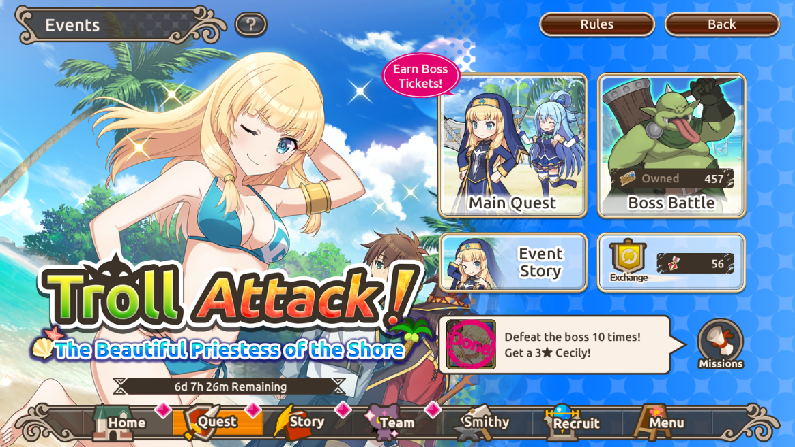
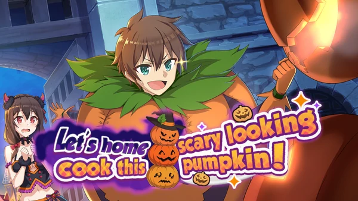

|
|  | Los eventos se llevan a cabo constantemente en el juego, durante los cuales tienes una excelente oportunidad de ganar valiosos premios y buenos héroes. Para evitar que los jugadores se aburran, las condiciones y el entorno de los eventos cambian constantemente, ¡y también se les agregan episodios de historias temáticas con sus personajes favoritos! Para participar en eventos, haga clic en "Tarea" en el menú inferior de la página de inicio y seleccione la pestaña "Eventos". |
A medida que avanza en las tareas, obtiene acceso a episodios de la historia que revelan gradualmente la trama del evento. ¡Completa todas las tareas para descubrir cómo termina la historia!. or completar misiones de eventos, recibe boletos de jefe. Cuando completes la Etapa 12 del Evento en dificultad Normal, se desbloquearán las batallas contra jefes. Para derrotarlos, puede obtener emblemas que se pueden intercambiar por pociones de habilidades únicas y artículos raros similares. |
 |